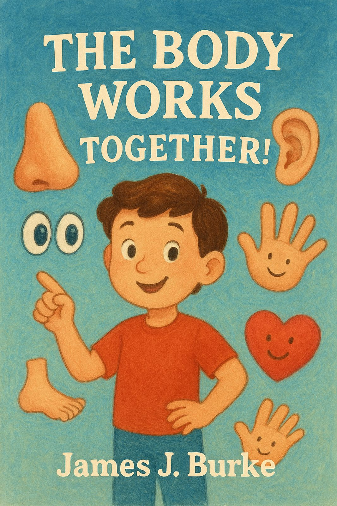

The Body Works Together!
A Story About God's Church
Get the Book
Order on AmazonAbout the Book
What would happen if a nose had to walk without any legs? Or if feet tried to hug without any arms? In The Body Works Together!, children meet some very silly body parts to learn a very important lesson: God made us all different, and we need each other!
Based on 1 Corinthians 12:12, this colorful picture book helps children understand that every person in the church is special and has a job to do. It’s the perfect way for parents and grandparents to share the beauty of God's design with the little ones in their lives.
A Peek Inside
"There once was a nose—yes, a great big nose!
He could smell every flower wherever he goes.
But walking was tricky, for try as he might,
A nose cannot wander with no legs in sight."